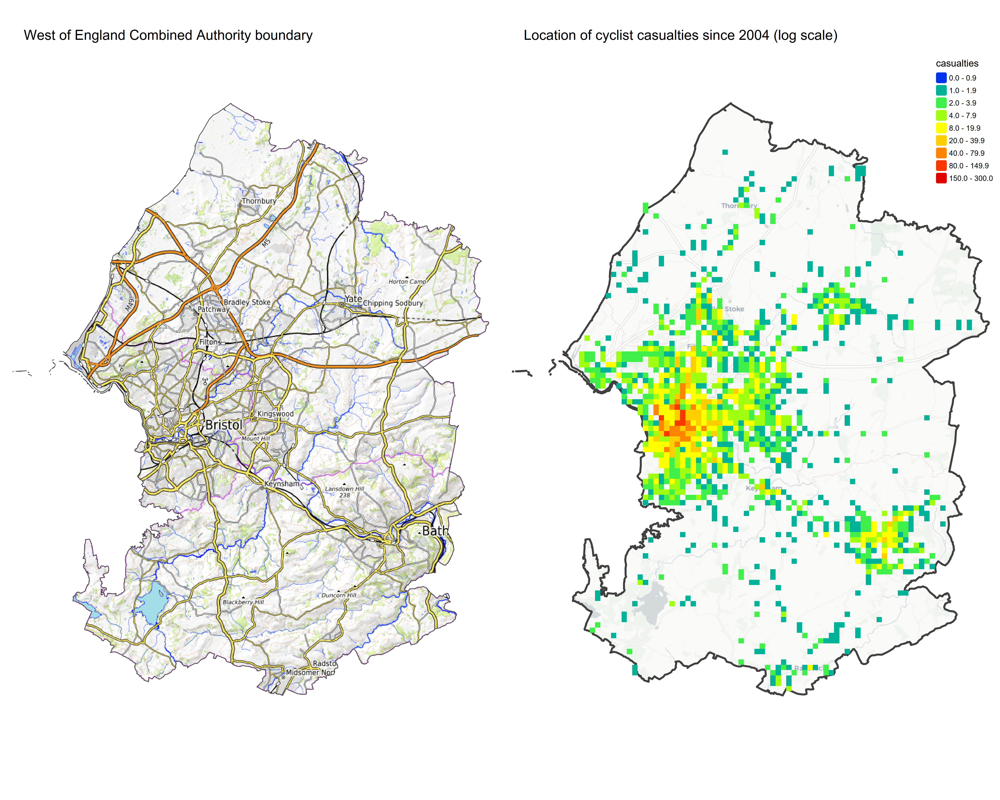

This report is an adaption of the national DfT road safety factsheets, adapted for the Combined Authority (CA) region shown in the maps below. Combined Authority has been chosen as a significant proportion of the national report is based on modal data which is only available disagregated by CA.

1. Main findings
Between 2004 and 2024:
- fatalities were down 50% from 2 to 1
- serious injuries (adjusted) decreased by 14%
- cyclist traffic (distance cycled) increased by 73%
Averaged over the period 2020 to 2024:
- an average of 0.02 cyclists died and 0.96 were seriously injured (adjusted) per week in reported road collisions
- a majority of cyclist fatalities (40%) do not occur at or within 20m of a junction compared to 45% of all seriously injured (adjusted) casualties
- % of Cyclist fatalities were in collisions involving a single car
- 20% of cyclist fatalities occurred on rural roads compared to 10% of all cyclist casualties
- 57% of cyclist killed or seriously injured (KSI) (adjusted) casualties were male
The most common contributory factor allocated to pedestrians no contributory factors included in the public data
2. Pedestrian traffic and reported casualties
In 2024, 1 cyclist were killed in West of England combined authority, whilst 55 were reported to be seriously injured and 266 slightly injured.
Table 1 and Chart 1 show that cyclist traffic (measured by distance cycled) has increased between 2004 and 2024 whilst fatalities, serious and slight injuries have fallen.
Between 2023 and 2024, cyclist fatalities increased by % while cyclist traffic (distance cycled) increased by 173%.
| Year |
Killed |
Serious |
Slight |
All |
Traffic |
| 2004 |
2 |
63 |
276 |
341 |
73.06 |
| 2005 |
1 |
55 |
275 |
331 |
58.12 |
| 2006 |
3 |
52 |
300 |
355 |
39.63 |
| 2007 |
0 |
64 |
333 |
397 |
99.09 |
| 2008 |
2 |
51 |
276 |
329 |
119.61 |
| 2009 |
3 |
61 |
327 |
391 |
51.39 |
| 2010 |
2 |
78 |
345 |
425 |
79.42 |
| 2011 |
0 |
78 |
311 |
389 |
99.63 |
| 2012 |
1 |
64 |
328 |
393 |
87.21 |
| 2013 |
5 |
60 |
313 |
378 |
61.35 |
| 2014 |
1 |
72 |
362 |
435 |
60.82 |
| 2015 |
1 |
69 |
293 |
363 |
96.91 |
| 2016 |
1 |
58 |
323 |
382 |
87.96 |
| 2017 |
2 |
42 |
273 |
317 |
82.11 |
| 2018 |
0 |
64 |
345 |
409 |
84.91 |
| 2019 |
0 |
52 |
395 |
447 |
72.68 |
| 2020 |
0 |
35 |
227 |
262 |
109.11 |
| 2021 |
3 |
52 |
272 |
327 |
56.46 |
| 2022 |
1 |
55 |
259 |
315 |
67.05 |
| 2023 |
0 |
53 |
227 |
280 |
46.16 |
| 2024 |
1 |
55 |
266 |
322 |
126.18 |
3. How far do Cyclists travel?
The National Travel Survey (NTS) which provides the number of trips and average distance travelled (NTS0303_ca) by person per year for Combined Authority residents. This is used to derive casualty rates per mile traveled for cyclist, which also use the landsat global 1km population data to estimate the population of the Combined Authority.
4. Casualty rates per mile travelled
The cyclist casualty rate has increased for all severities in 2024 compared to 2004.
The overall casualty rate decreased by 45%. The fatality rate decreased by 70% compared to a 50% reduction for serious injuries and a 44% reduction for slight injuries.
| Year |
Killed |
Serious |
Slight |
All |
| 2004 |
0.027 |
0.867 |
3.774 |
4.668 |
| 2005 |
0.017 |
0.939 |
4.739 |
5.695 |
| 2006 |
0.076 |
1.310 |
7.571 |
8.957 |
| 2007 |
0.000 |
0.648 |
3.358 |
4.006 |
| 2008 |
0.017 |
0.430 |
2.304 |
2.751 |
| 2009 |
0.058 |
1.190 |
6.360 |
7.609 |
| 2010 |
0.025 |
0.978 |
4.348 |
5.351 |
| 2011 |
0.000 |
0.785 |
3.119 |
3.904 |
| 2012 |
0.011 |
0.733 |
3.762 |
4.506 |
| 2013 |
0.081 |
0.984 |
5.095 |
6.161 |
| 2014 |
0.016 |
1.191 |
5.945 |
7.152 |
| 2015 |
0.010 |
0.713 |
3.022 |
3.746 |
| 2016 |
0.011 |
0.660 |
3.671 |
4.343 |
| 2017 |
0.024 |
0.512 |
3.324 |
3.861 |
| 2018 |
0.000 |
0.752 |
4.064 |
4.817 |
| 2019 |
0.000 |
0.715 |
5.436 |
6.151 |
| 2020 |
0.000 |
0.319 |
2.082 |
2.401 |
| 2021 |
0.053 |
0.923 |
4.815 |
5.791 |
| 2022 |
0.015 |
0.818 |
3.865 |
4.698 |
| 2023 |
0.000 |
1.147 |
4.919 |
6.066 |
| 2024 |
0.008 |
0.433 |
2.111 |
2.552 |
5. Sex and age comparisons
Between 2020 and 2024, 78% of cyclist casualties were male and 22% female.
There are 3.5 times more male than female cyclist casualties overall. This compares to NA more for 30-39, NA more for 0-11and NA more for 70+ - the only age group in which female casualties outnumber males.
6. Which vehicles are involved in collisions with pedestrians?
Between 2020 and 2024, most cyclist fatalities occurred in 2 vehicle collisions involving a pedal cycle (2).
However, the highest proportion of casualties from single vehicle collisions involve 1 pedal cycle (5.3%). The second highest proportion (0.3%) occurred in collisions when 2 vehicles involved.
| Vehicles |
Fatalities |
Serious injuries |
Slight injuries |
All casualties |
% Fatalities |
| 1 pedal cycle |
1 |
8 |
10 |
19 |
5.3 |
| 2 vehicles involved |
4 |
232 |
1210 |
1446 |
0.3 |
| 3 or more other vehicles involved |
0 |
9 |
32 |
41 |
0.0 |
| Total |
5 |
249 |
1252 |
1506 |
0.3 |
7. Time of day of collisions
The weekday peak time for cyclist KSIs is from 3pm to 8am. By contrast, the peak is from 1am to 7pm at weekends.
9. Vehicle movement on the road
A majority of cyclist fatalities( 40 %) occur not at junction or within 20 metres compared to 45 % of serious injuries (adjusted). However, 60 % of fatalities occur at a junction compared to 50 % of serious injuries (adjusted).
| Junction |
Fatalities |
Serious |
Slight |
All casualties |
| Not at junction or within 20 metres |
40% |
45.1% |
44% |
44.2% |
| T or staggered junction |
40% |
41% |
43% |
42.7% |
| Crossroads |
20% |
8.9% |
7.4% |
7.7% |
| Using private drive or entrance |
0% |
3.7% |
3.1% |
3.2% |
| 19 |
0% |
1.1% |
2% |
1.9% |
| Junction with more than four arms (not roundabout) |
0% |
0.2% |
0.4% |
0.3% |
| Data missing or out of range |
0% |
0% |
0.1% |
0.1% |
Sections 10 not reproducible as data is not public
Sections 11 and 14 are explanatory text.
This document might also be useful for understanding the methodology behind the categories https://assets.publishing.service.gov.uk/media/68373a464115cfe5bfaa2cd4/STATS20_2024_specification.pdf